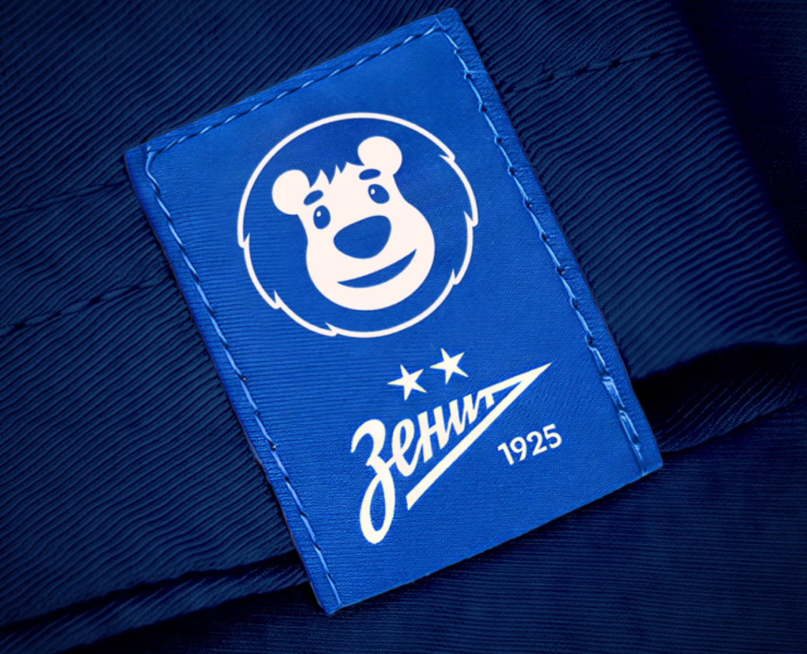

синегривый лев
- клиент
- ФК «Зенит»
- отрасль
- спорт
- формат
- талисман · стратегия, характер, 2D/3D-образ, айдентика, мерч
задача
маскот был только костюмом для аниматора на матчах — нужно было обратить любовь трибун в медиаактив
идея
милый талисман стал добрым хулиганом: персонаж, который работает 365 дней в году, а не 90 минут в день матча



как сделали
- 01стратегия и характер
вплоть до гороскопа
- 02образ
десятки пластик: костюм, стикерпак, полка магазина
- 03айдентика
знак с головой Льва, шрифтовой логотип, кобрендинг с клубом
- 04мерч
флаффи-капсула с фактурой гривы
результат
- +1 игрок в составе «Зенита»
- 2D · 3D костюм, стикеры, тв-графика